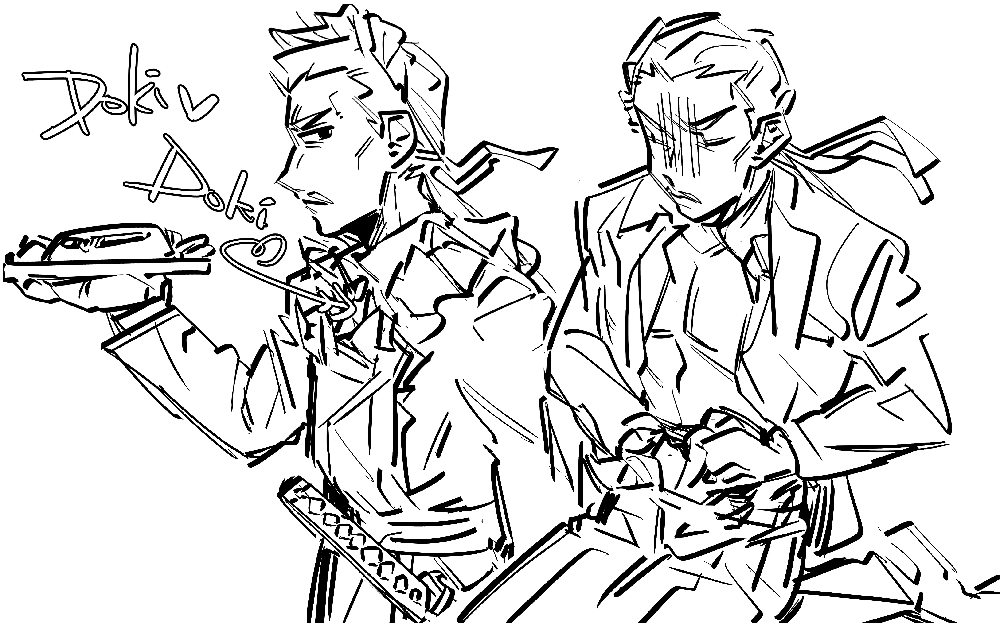
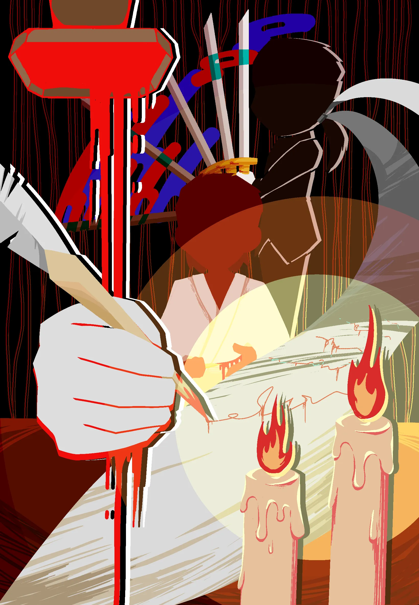
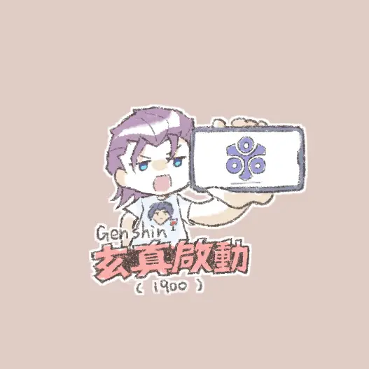

注意
本頁面含有可能會讓人不適之內容，包括但不限於血腥、內臟、自殺、嘔吐等。
如果無法接受，可以直接離開。
切腹
為了僅餘的榮譽，劃開腹部——以死亡換取寬恕。


玄真：在決鬥中殺後克里姆特後的IF線。在獄中沒有答應沃爾特克斯的交易的玄真在死刑前選擇了切腹。
克里姆特：最終決鬥的IF線。玄真會為克里姆特介錯。
嘔吐
那麼就來玩大逆轉裁判吧！
你說的對，但《大逆轉裁判》是由卡普空自主研發的全新法庭戰鬥遊戲。 遊戲發生在一個被稱作「大英帝國」的幻想世界，在這裡，被沃爾特克斯選中的人將被授予「律師臂章」，導引異議之力。 你將扮演一位名為「成步堂龍之介」的神秘角色，在自由的旅行中邂逅性格各異、能力獨特的同伴們，和他們一起擊敗強敵，找回亞雙義的理想——同時，逐步發掘「亞雙義原神」的真相。
你說的對，但《大逆轉裁判》是由卡普空自主研發的全新法庭戰鬥遊戲。 遊戲發生在一個被稱作「大英帝國」的幻想世界，在這裡，被沃爾特克斯選中的人將被授予「律師臂章」，導引異議之力。 你將扮演一位名為「成步堂龍之介」的神秘角色，在自由的旅行中邂逅性格各異、能力獨特的同伴們，和他們一起擊敗強敵，找回亞雙義的理想——同時，逐步發掘「亞雙義原神」的真相。
